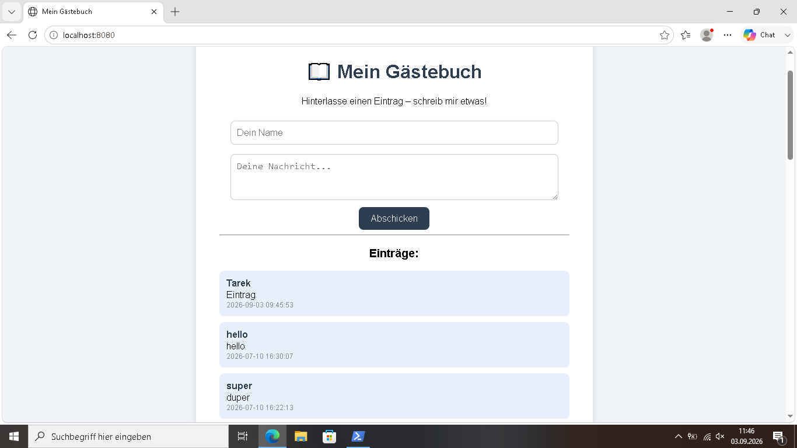

Gästebuch – PHP & Datenbank
Eine dynamische Webanwendung, in der Besucher Nachrichten hinterlassen können – gespeichert in MariaDB, angezeigt per PHP.
Ziel
Eine Webseite bauen, auf der Besucher Name und Nachricht eingeben können. Die Einträge werden in einer Datenbank gespeichert und live angezeigt.
Einblick in die Anwendung
Das Gästebuch läuft live – Einträge werden in MariaDB gespeichert und direkt angezeigt:

Formular, Datenbank-Anbindung und Ausgabe funktionieren zusammen.
Funktionen
- Formular für Name und Nachricht
- Speicherung per
INSERT - Anzeige aller Einträge per
SELECT - Zeitstempel mit deutscher Zeitzone
- Läuft in einem Docker-Container
Datenbank-Schema
CREATE TABLE gästebuch (
id INT AUTO_INCREMENT PRIMARY KEY,
name VARCHAR(100) NOT NULL,
nachricht TEXT NOT NULL,
erstellt DATETIME DEFAULT CURRENT_TIMESTAMP
);
Probleme & Lösungen
Problem 1: PHP konnte keine Verbindung zur Datenbank herstellen
Der PHP-Container erreichte die MariaDB nicht –
Connection refused.
Lösung: Logs geprüft, Container ins selbe Docker-Netzwerk geholt und die MySQLi-Erweiterung nachinstalliert.
Problem 2: Falsche Uhrzeit bei den Einträgen
Die Einträge wurden mit UTC-Zeit gespeichert statt mit deutscher Zeit.
Lösung: In der PHP-Konfiguration
date.timezone = Europe/Berlin gesetzt.
Was ich gelernt habe
- PHP mit MySQLi für Datenbankzugriff
- SQL-Befehle: CREATE, INSERT, SELECT
- Kommunikation zwischen Containern
- Fehleranalyse mit Logs